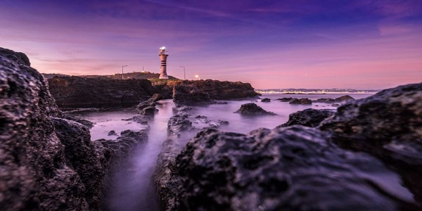
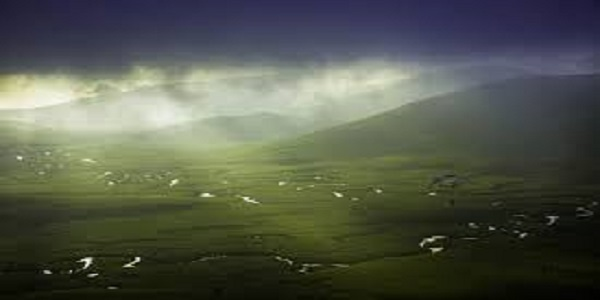
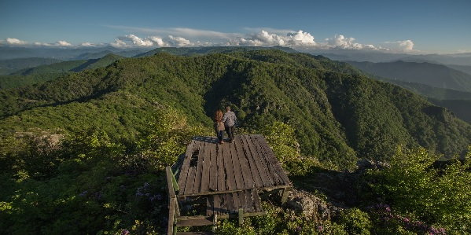

Ordu
Aslen Ordu'lu olmama rağmen Ordu'ya ilk kez bu sene gittim. Ve orayı gerçekten çok beğendim. Her şeyden çok şehrin sakin havası beni kendine çekmişti.
Şehrin her yerinden görülebilen Karadeniz kıyıları harika bir manzara sunuyordu ve denizin üstünden geçen teleferik şehre çok farklı bir hava katmıştı.
Ordu'nun yaylalarını görmesem de gerçekleşen bir fotoğraf sergisinde görmüş kadar olduk. O fotoğrafları da sizlerle paylaşacağım.
Ordu 4 Mevsim Ulusal Fotoğraf Yarışması Derece'ye Girenler
Mustafa Güral – Yason'da gün doğarken
Mustafa Kılınç – Menderesler
Mutlucan Elikçioğlu – Yoroz Tepesi
Ordu'nun Tarihi
Ordu şehrinde ilk yerleşme M.Ö.7. yüzyılında Miletli Kolonistlerce başlatılmıştır.Helenistik, Roma, Bizanslıların hüküm sürdüğü Ordu, Selçuklu Türkleri zamanında Osmanlıların hakimiyeti altına geçti. 14. yüzyıl ortalarına bugünkü Eskipazar’da Bayramlı adıyla kuruldu. Bayramlı kasabası 18. yüzyıl başlarında eski canlılığını kaybedince batıda bucak adıyla yeni bir ilçe merkezi doğdu. Bucak adı 1869-1870’de (ORDU) adına çevrildi.
Ordu'nun Coğrafi Özellikleri
Ordu il merkezi, dağların denize dik olarak indiği melet vadisinin oluşturduğu Boztepe'nin eteklerine kurulmuştur. İl merkezinden denize dökülen ve en büyük akarsuyumuz olan olan Melet Irmağı'nın doğu kısmında doğu ladini, yüksek kısımlarında ise karaçam, ibreli meşçereleri yetişmektedir.
Tarım arazilerinde ise genellikle ağaççık formunda fındık bitkisi bulunmaktadır.Akarsu bakımından zengin olup, tüm kanyonlarda ırmak, dere türü akarsular bulunmaktadır. En önemli ırmakları Melet Irmağı, Bolaman Çayı, Elekçi Irmağı, Turna suyudur. Ordu'da bulunan 100 km.lik kıyı şeridi'nin 60 kilometrelik kıyı bölümü kumsallardan oluşmaktadır.
Türkiye’de Ordu ili bal üretiminde 1. sırada, kivi üretiminde 2.sırada yer almaktadır. Ayrıca Türkiye’nin en önemli balık merkezi durumundadır.
Ordu'da Kültür ve Sanat
İlde birçok tiyatro ve sinema bulunmakta ve düzenli kültürel etkinlikler düzenlenmektedir. Ordu her ne kadar coğrafya kitaplarında Orta ve Doğu Karadeniz bölgelerinde toprağı olan ve her iki bölgeye ait bir il olarak geçmekteyse de hemen hemen bütün kültürel özellikleriyle Dogu Karadeniz Bölgesi'ne ait bir ildir. İlde Türkmen/Çepni kültürü hakimdir.
Ordu halk müziği ve geleneksel halk oyunları çevre illerle benzerlikler göstermektedir. Bağlama ,kemençe, davul-zurna,davul-klarnet (yöresel tabirle gırnata) gibi çalgıların bir arada kullanıldığı yörede oyunlar ilçeden ilçeye değişmekle birlikte karşılama ve horon ağırlıklıdır.
Klarnet yani gırnata çalgısı davul ile birlikte daha çok Vona (Perşembe), Ordu Merkez, Gülyalı, Kabadüz, Ulubey ilçelerinde daha çok Ordu Karşılaması, Giresun Karşılaması, Giresun Sallaması, Gürcü Horonu, Perşembe Erkek Horonu, Sarhoş Karşılaması gibi oyunlara eşlik etmektedir. Kültürel özellikler açısından Ordu ve ilçeleri benzer özellikler gösterse de pek çok farklılıklar da içermektedir.
Horon daha çok kıyı ilçelerinin ve Ordu Merkez ilçenin güneyinde kalan Ulubey, Kabadüz, Gürgentepe, Gölköy, Mesudiye ilçelerinin halk oyunudur. Kıyı ilçeleri olarak da Ünye'nin bazı köyleri, Fatsa, Vona (Perşembe), Gülyalı ilçelerinde icra edilir. Karşılama oyunları Ordu ilinde en çok oynanan oyun türlerinden biridir. Bu oyunda da daha çok Bolaman, Vona(Perşembe), Ordu Merkez, Gülyalı, Kabadüz, Ulubey, Gürgentepe, Gölköy, Mesudiye (kısmen) ilçelerinde çokca icra edilir. Karşılama ad olarak Ordu Karşılaması olarak bilinir ve figürleri Giresun Karşılaması'ndan farklıdır. Ancak yörede Giresun Karşılaması da icra edilmektedir. Karşılama müzikleri genellikle Giresun ile aynı özelliklere sahiptir. Ordu'da Oy Gemici Gemici, Fındık Toplayan Kızlar, Bağlamam Perde Perde gibi türkülerle karşılama oyunları bolca icra edilir.
Yöre Ordu-Giresun ağzının etkilediği bölge içerisindedir. Ünye-Beşikdüzü (Vilayati Çepni) arasında kullanılan ağız ortak bir ağızdır. Bu ağız Trabzon, Rize ve Artvin ağızlarıyla karıştırılmamalıdır.
Ordu'da Gezilecek Yerler
Yason Burnu
Perşembe ilçe merkezine 15, il merkezine 28 km. mesafede Çaytepe köyü sınırları içindedir.
Perşembe ilçesinin 15 km. batısında, Çaytepe köyü sınırları içindedir. 1. derece arkeolojik, 2.derece doğal SİT alanıdır. Doğal güzelliği görülmeye değerdir. Samsun-Ordu karayolu
üzerinde deniz kenarında olması, 1869 yılında yapılan kilisenin onarılarak ziyarete açılması ve aslına uygun çevre düzenlemesi ile turizm cazibe merkezi haline getirilmiştir.
Karadeniz sahili boyunca üzerinde kilise bulunan tek yarımada burasıdır. Güneşin doğuşu
ve batışı yaz aylarında çıplak gözle izlenebilir. Yarımada üzerinde ve yakın çevresinde sahil boyunca piknik alanları, yeme içme yerleri mevcuttur. Otoparkı vardır. Türk
mutfağı ve geleneksel Karadeniz mutfağını bu alanlarda bulmanız mümkündür. Yabancı turistler; özellikle de hıristiyanlar içingörülmesi gereken önemli bir mabet olan kilise ve üzerinde bulunduğu yarımada Ordu ilinin en çok ilgi çeken yerleri arasındadır.
Yason Burnu Yarımdadası Altınpost Efsanesi'nin (Arganot Efsanesi) geçtiği yer'dir.
Perşembe Yaylası Menderesleri
Perşembe Yaylası Menderesleri, ülkemizdeki doğal güzelliklerin en önemlilerinden biridir.
Yerli ve yabancı birçok fotoğrafçının objektiflerinden yer bulmaktadır.
Yatak eğimlerinin azalması ile S ve U şeklide uzayan Perşembe Yaylası Menderesleri, alüvyon bakımından zengin toprak yapısından dolayı ortaya çıkmıştır.
Yayla boyunca sağa ve sola S ve U şekillerinden kıvrılan menderesler, yaz ayları ile birlikte kurumaktadırlar.
Kar yağışı, yağmurlar ve kar erimeleri sonucu canlanan Perşembe Yaylası Menderesleri, balık veya canlı yaşamı barındırmamaktadırlar.
Yaylada yaşayan kuzu, büyükbaş ve diğer canlıların su kaynaklarıdırlar.
Menderesler, Perşembe Yaylası gölüne kaynak oluşturmaktadırlar.
Gölköy
Gölköy’ün bilinen eski adı, Habsamana'dır. İlçe kasaba XVII.YY'da bugünkü yerini aldı. İlçe bugünkü adını içinde bulunan göl ve ilçeyi ikiye ayıran Gölköy Irmağı'ndan almıştır. Bu ırmak Bolaman Deresi’nin yukarı kollarından birisidir.
Gölköy’ün yerleşim tarihi oldukça eskiye dayanır. M.Ö. II. YY' da Kızılırmak yayı içinde yaşayan Hititler ile çağdaş olan ve kuzeyden komşuları olan Kaşkarlar ile Ordu ili tarihi başlar. Kaşkarlar'ın yerleşim yerleri kesin olarak bilinmemekle birlikte Kastamonu ve Ordu yayı içerisindeki bölümde yaşadıkları bilinmektedir. Bu topluluk yarı yerleşik bir hayat yaşamaktaydı. Anadolu Selçukluları Döneminde Ordu ve Çevresi. Bu yıllarda Anadolu’ya Türk akınlarında sonra Kutalmışoğlu Süleyman Şah ve Mansur Selçuklu Devletini kurdular.1071 yılında sonra yapılan savaşlarda Ordu ili bir süre için Türklerin eline geçti. Hacı Emir Oğulları Beyliği: Bu beylik Mesudiye ilçesi topraklarında oturan Türkmenlerden Cepni Boyuna mensup Bayram Bey tarafından kurulmuştur. Halk daha önceden Müslüman olduğu için beylik kısa zamanda gelişmiştir.
Osmanlı Dönemi: Fatih Sultan Mehmet Trabzon Rum Devleti’ni ortadan kaldırınca Ordu ili Osmanlı idaresine girmiştir. GENEL BİLGİ İlk önceleri (Sınman) köyünde kurulan Gölköy, 17. Yüzyıl ortalarında bugünkü yerini almıştır. İlçeyi şimdiki yerine ilk defa kuran Şıhmanoğlu soyundan Hacı Ali Ağa'dır. Torunu küçük Hacı Ali Ağa ise şimdiki Konak adı ile anılan ve surlarla çevrili şatoyu yaptırmıştır. Bu şato, kasabaya hâkim bir tepenin üzerindedir. Zamanla birçok onarımlar görmesine rağmen, kalıntıları eski kişiliğini korumaktadır. Kalıntılar içinde en dikkate değe olanı hamamıdır. 52 basamaklı merdivenle inilen kuyusundan bugün bile yararlanılmaktadır. Eski adı Hasmana'dır. Bir kısım tarihçiler Hapsamananın Sümerce bir isim olduğunu ileri sürmektedirler. Gölköy önceleri Ordu Merkez İlçesine bağlı bir bucak iken 25.6.1936 tarihinde Ordu İli'nin bir ilçesi haline getirilmiştir. Çermik: İlçe'nin beşyüz metre kadar güneyinde Çermik adıyla anılan bir göl vardır. Bu gölün suları, maden suyu özelliğini taşıdığı için, özellikle böbrek hastalarına tavsiye ederler. Ulugöl: İlçeye 15 km. uzaklıktaki bu göl, yaklaşık 250 metre çapında olup, çevresi ormanlarla kaplıdır. Bu gölde bol miktarda yaban ördeği avı yapılır. Rakım 860 ile 1200 metre arasında değişmektedir.
Ohtamış Şelalesi
Ordu’nun Ulubey ilçesinde bulunan Ohtamış Şelalesi ilçe merkezine yaklaşık 20 km mesafededir. Yaklaşık 30 metre yükseklikten yüksek debi ile düşen sular muhteşem bir doğa manzarası oluşturmaktadır. Yakınlarında aynı ismi taşıyan Ohtamış Köyü bulunmaktadır.
Şelaleye ulaşım için özel aracınızı yaklaşık 500 metre geride park etmeniz gerekiyor. Sonrasında doğa yürüyüşü tadında bir yol ile şelaleye ulaşım sağlayabilirsiniz. Yaz aylarında şelalenin bulunduğu havuz bölgesi oldukça serin oluyor.
Şelaleye yürürken dikkat etmeniz gereken noktalar bulunuyor. Patikalar ve taşlı araziler çocuklar için sıkıntı yaratabilecek bir düzeyde. 2018 yılında yaşanan sel felaketi sonunda Şelaleye giden yolların zorluğu bir miktar artmış.
Yoroz Tepesi
Ordu il merkezine 20 km mesafede bulunan Yoroz Kent Ormanı Karadeniz’in yeşil doğasının eşsiz güzelliklerini bir arada görebileceğiniz ve doğa ile iç içe güzel vakitler geçirebileceğiniz zengin ormanları ve seyir terasına sahip bir alandır.
Kent ormanının seyir terasında muhteşem bir manzara bulunur. Bu noktadan bir tarafta Ordu kentini diğer tarafta Giresun kentini görmek mümkün. Terasa çıkarken bir anlamda bir doğa yürüyüşü, treking yapıyor gibi düşünebilirsiniz. Tırmanırken yorulmanız durumunda dinlenecek noktalar bulunuyor.
Kent Ormanı manzarasını seyretmek için seyir terasına aracınızla çıkmanız mümkün değil. Bir noktada aracınızı bırakarak yürümeniz, tırmanmanız gerekiyor. Yaklaşık 30 dakikalık tırmanışta çeşitli zorluklarla karşılaşabilirsiniz. Bu nedenle hazırlıklı olmanızda fayda var. Yaz aylarında yanınızda su bulundurmanız gerekiyor. Yolun son kısımlarında yapılan ahşap merdivenlerin bazıları deforme olmuş. Bu kısımlarda zorlanabilirsiniz. Ancak tepeye ulaştığınızda ve manzarayı gördüğünüzde çıktığınıza pişman olmayacaksınız.